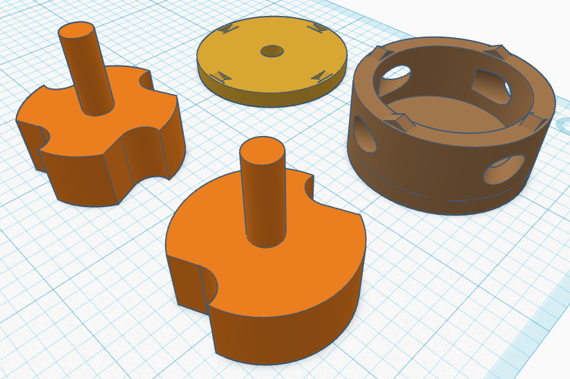
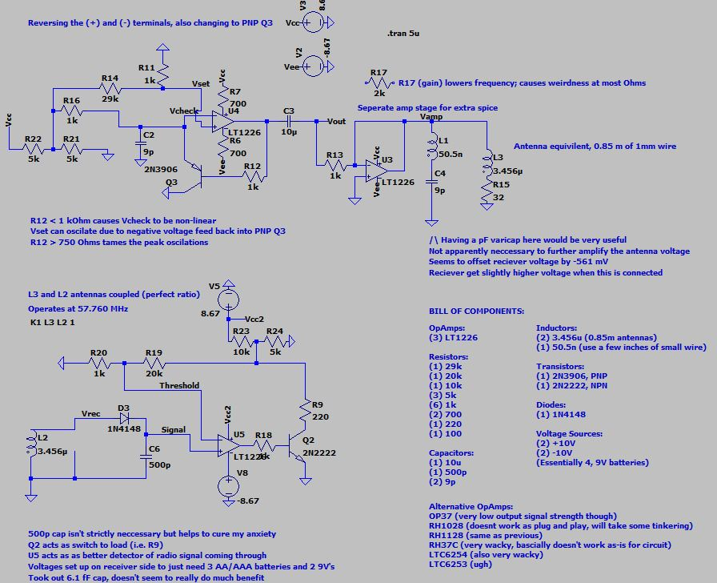

Sean Saliga


Below are some various hobby projects of mine I've worked on
over the past years. There are a variety of topics that they
cover, ranging from 3D Modeling and Printing to Python, AI,
and Machine Learning.
To see more about a specific project, just click on its image!
(Note that if there is not a page for it, you will be redirected
to this page)
Are semi-random training methods the
future of machine learning? No.
Is it fantastic that these methods can create
models with 25-50% of the ability of modern-day
models? Yes.
Initially as a project to learn more about
deep learning and neural networks, this
Python package has become one of my favorite
projects to experiment with.
What's better than an HD chess GUI with fast
and powerful AIs on Chess.com? Obviously a
Retro CMD screen with AIs that can almost beat
a snail (in game theory and speed).
Built from the ground up in Python, this was
my first big Python project. It consists of a
retro GUI, mouse controls, some AIs to play with,
and a coding structure that would make most
SWEs explode.

This beautiful air engine was initially
a myriad of sketches that likely looked
like ancient hieroglyphs in my notebook.
After embracing the torture greatness
that is SolidWorks online, I switched to
TinkerCAD to simplify and redesign lots of the
initial design. I am happy to say it does not
detonate, and does in fact spin.

Built ontop of a personal project to make my own
oscillator, this is the resulting final project for
my first of two senior lab courses at UF.
A few goals I had were:
- Make a working portable radio
- Make an oscillator so fast my professor questioned my sanity
I am happy to say I very much completed both.